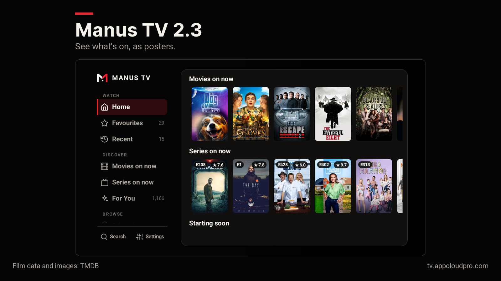

Manus TV
A fast, remote-friendly player for Android TV and Google TV. You add your own M3U playlist links; Manus TV turns them into a clean guide you can drive with the TV remote.
Manus TV does not include, host or provide any channels, streams or programme data. You are responsible for the playlists you add.
New in 2.3: see what's on, as posters

- Movies on now: films playing right now on your channels, as posters with year and rating, newest and best-rated first.
- Series on now: episodes airing now, one tile per show even when it is on several channels.
- Details page, My list, reminders for films starting soon, and Continue watching on the Google TV home screen.
- Xtream logins (typed on your phone, encrypted on the TV), your provider's films and series, and catch-up.
- Previous-channel key, channel numbers, sleep timer, and automatic switch to a channel's next link when one fails.
- Encrypted backup and restore through your phone.
Posters need a free key from TMDB, sent from your phone in Settings → Film information. Full release notes.
Install on your TV
- On your Android TV or Google TV, install the free Downloader app from Google Play.
- Open Downloader and type
tv.appcloudpro.com/get - Install, open Manus TV and add your playlist (type the link, or scan the QR code with your phone).
Or download the APK from GitHub Releases.
Features
- Add playlists by typing, or send the link from your phone by scanning a QR code (same Wi-Fi).
- Several playlists merged; duplicates folded into one channel with multiple versions.
- Guide by country, category and playlist; search; favourites; recently watched.
- Pause and rewind live streams where the stream allows it; automatic reconnect.
- Subtitles: an English track if present, otherwise translated on the TV (Google ML Kit).
- Built for the TV remote first. No account, no ads.